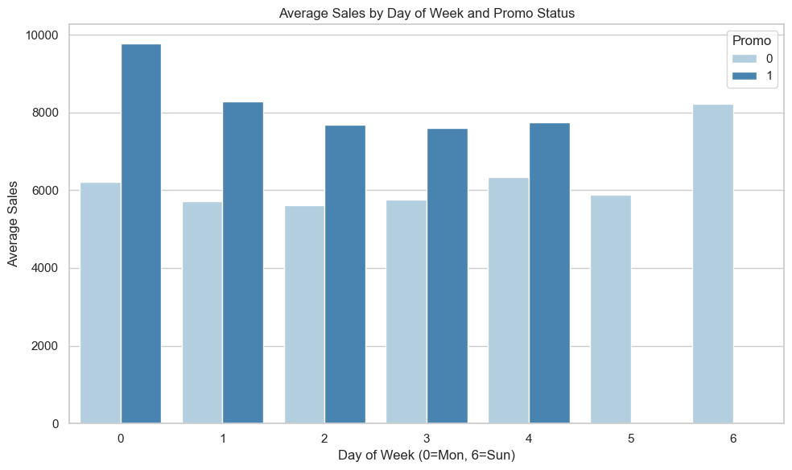

This notebook explores historical sales data from Rossmann stores to uncover patterns across time, promotions, and store attributes.
Data
Rossmann is a drug store chain with over 3000 locations across Europe (kaggle.com). Each instance in this dataset contains information about a single day’s business.
The entire set spans approximately 3 years (2013 - 2015).
There are about 100,000 instances, of which roughly 84,000 contain useful information (the remaining instances are when the store was closed and sales were not possible).
Objective
The goals of this notebook are to understand the data deeply and begin revealing its principal trends, then preprocess it to maximize the predictive performance of the model.
The target of our analysis and model is Sales, and we are tasked with predicting daily amount for the next 6 weeks based on the given data.
Load all required libraries and datasets - train.csv (main table) and store.csv (store metadata).
Merge on the Store column to enrich the training set with store-level features.
Code
# Imports & display settingsimport warningswarnings.filterwarnings("ignore")import calendarfrom datetime import datetimefrom pandas import Timestampimport numpy as npimport pandas as pdimport matplotlib.pyplot as pltimport seaborn as snsimport statsmodels.api as smfrom scipy.stats import ttest_indfrom sklearn.preprocessing import LabelEncoderfrom sklearn.model_selection import train_test_split# Visual / display configurationsns.set_theme(style="whitegrid")pd.set_option("display.max_columns", None) # show all columnspd.set_option("display.width", None) # auto-fit to console widthpd.set_option("display.float_format", "{:,.2f}".format)# Load datasets df_store = pd.read_csv("../data/store.csv", low_memory=False)df_train = pd.read_csv("../data/train.csv", low_memory=False)# If your train CSV has a 'Date' column, you can parse it on read:# df_train = pd.read_csv("../data/train.csv", low_memory=False, parse_dates=["Date"])# Merge store metadata into training data df = pd.merge(df_train, df_store, how="left", on="Store")df_raw = df.copy(deep=True)
Drop days when store is closed, or when store is open and Sales == 0
Code
zero_open = df[(df["Open"] ==1) & (df["Sales"] ==0)]print(f"Zero-sales open days: {len(zero_open)}")df = df[df["Open"] ==1].copy()df = df.drop(columns=["Open"])df = df[df["Sales"] !=0].copy()zero_open = df[(df["Sales"] ==0)]print(f"Zero-sales total (regardless of open/closed): {len(zero_open)}")df.info()
Perform essential preprocessing to make the dataset clean and consistent before exploration.
This includes removing unavailable target columns, extracting date components, normalizing data types, and flagging/fixing data quality issues.
Remove Customers column
Drop the Customers column, which is not available at prediction time. Keeping it would cause data leakage.
Code
df = df.drop(columns='Customers', axis=1).copy()
Extract and transform date features
Extract granular time-based features such as year, month, day, and week-related indicators from the Date column. These features may carry strong temporal signals and seasonality patterns important for modeling.
Code
# Convert Date to datetime - normalize sets all times to 00:00:00 for readabilitydf['Date'] = pd.to_datetime(df['Date'], format="%Y-%m-%d")df['Date'] = df['Date'].dt.normalize()# Extract features from Date for possible feature engineeringdf['Year'] = df['Date'].dt.yeardf['Month'] = df['Date'].dt.monthdf['Day'] = df['Date'].dt.day# Seasonal and weekly patterns (ISO week number)df['Week'] = df['Date'].dt.isocalendar().week# (0 = Monday, 6 = Sunday)df['DayOfWeek'] = df['Date'].dt.dayofweek # Customer behavior likely differs depending on weekend / weekdaydf['IsWeekend'] = df['DayOfWeek'] >=5# Make IsWeekend binary integer columndf['IsWeekend'] = df['IsWeekend'].astype(int)
Normalize data types across columns
Ensure all categorical features are consistently treated as strings. This avoids encoding errors and makes feature engineering and encoding more predictable downstream.
Code
# Consistent integer types (int64)for col in df.select_dtypes(include=['int', 'UInt32', 'int32', 'int16', 'uint8']).columns: df[col] = df[col].astype('int64')# Convert all object-type columns to string dtypedef convert_object_to_string(df):for col in df.select_dtypes(include='object').columns:# Get the first 100 non-null values to check type consistency sample_values = df[col].dropna().head(100)# If all sample values are strings (not numeric-looking), convertif sample_values.apply(lambda x: isinstance(x, str)).all(): df[col] = df[col].astype('string')return df# Applydf = convert_object_to_string(df)
Missing values for top 4 columns with the most nulls
Visualize the absolute count of missing values in the columns with the highest proportion of nulls. This provides a quick overview of which fields require targeted cleanup.
Null handling for Promo2SinceYear, Promo2SinceWeek, PromoInterval
For stores with Promo2 == 1, we impute safe defaults in Promo2SinceYear and Promo2SinceWeek to allow type conversion.
Then we compute Promo2Start as a date, calculate promo duration in weeks, and set duration to 0 for inactive stores.
Code
# Only run for rows where Promo2 == 1promo2_rows = df['Promo2'] ==1# Convert to integers safelydf.loc[promo2_rows, 'Promo2SinceYear'] = df.loc[promo2_rows, 'Promo2SinceYear'].fillna(0).astype(int)df.loc[promo2_rows, 'Promo2SinceWeek'] = df.loc[promo2_rows, 'Promo2SinceWeek'].fillna(1).astype(int)# Convert Promo2SinceWeek to a start-of-week date# Updated function using ISO week logicdef week_to_date(year, week):try:return pd.to_datetime(f'{int(year)}-{int(week)}-1', format='%G-%V-%u')except:return pd.NaTdf['Promo2Start'] = df.apply(lambda row: week_to_date(row['Promo2SinceYear'], row['Promo2SinceWeek']) if row['Promo2'] ==1else pd.NaT, axis=1)# Calculate duration in weeks (or days)df['Promo2DurationWeeks'] = (df['Date'] - df['Promo2Start']).dt.days //7# fill NaN durations with 0 where Promo2 is inactivedf['Promo2DurationWeeks'] = df['Promo2DurationWeeks'].where(df['Promo2'] ==1, 0)
Null handling for CompetitionOpenSinceYear, CompetitionOpenSinceMonth
Handle missing values in competition-related fields. If either component of the open date is missing, we impute the missing part with the median or a fallback and reconstruct the full competition open date.
Code
# Encode low-cardinality integer columns (safe handling of NaNs)label_cols = ['DayOfWeek', 'Promo2SinceYear']for col in label_cols: df[col] = df[col].fillna(-1).astype('int64') # -1 = missing# Create datetime column 'CompetitionOpenSince'df['CompetitionOpenSince'] = pd.to_datetime(dict( year=df['CompetitionOpenSinceYear'], month=df['CompetitionOpenSinceMonth'], day=1 ), errors='coerce'# Convert invalid entries to NaT)# Find earliest date in the dataset per storestore_start = df.groupby('Store')['Date'].min().rename('StoreStartDate').reset_index()# Merge that back into main dfdf = df.merge(store_start, on='Store', how='left')# Fill missing CompetitionOpenSince with StoreStartDatedf['CompetitionOpenSince'] = df['CompetitionOpenSince'].fillna(df['StoreStartDate'])# Compute duration in monthsdf['CompetitionOpenDuration'] = ( (df['Date'] - df['CompetitionOpenSince']).dt.days //30)df.info()
Null Handling for PromoInterval and CompetitionDistance
We drop PromoInterval because its meaning is redundant with existing Promo2, Promo2SinceWeek, and Promo2SinceYear fields. Most of its values are missing for non-participating stores (where Promo2 == 0), and the remaining information is already captured in the constructed Promo2Start and Promo2DurationWeeks.
For CompetitionDistance, we impute missing values using the median. This avoids introducing outliers or bias into the model, since the missing values are rare (~0.2% of rows) and unlikely to carry a specific signal. Imputing with the median preserves distributional stability and avoids skewing model behavior.
Code
# Drop 'PromoInterval' — redundant with Promo2 logicdf.drop(columns=['PromoInterval'], inplace=True)# Impute missing CompetitionDistance with median valuemedian_distance = df['CompetitionDistance'].median()df['CompetitionDistance'] = df['CompetitionDistance'].fillna(median_distance)
Feature encoding
Prepare for encoding by inspecting feature cardinality. This step informs the choice between one-hot encoding, label encoding, or grouping of rare categories.
Feature cardinality
Display the number of unique values for each feature. Features with low cardinality are good candidates for one-hot encoding, while high-cardinality features may require alternative strategies.
We encode numeric categorical features with a small number of discrete values ( DayOfWeek, Promo2SinceYear) by casting them to int64.
Missing values are filled with -1 to preserve numerical format while signaling “missing” in a way that models can interpret.
This avoids issues with NaNs during modeling while preserving ordinal or numeric meaning where applicable.
Code
# Label encode simple binary or low-card columns (already 0/1 or small integers)label_cols = ['DayOfWeek', # 1–7'Promo2SinceYear'# up to 8 unique values]for col in label_cols:# Fill NaNs with -1 to safely cast to int df[col] = df[col].fillna(-1).astype('int64') # -1 means "missing"
Code
zero_open = df[(df["Sales"] ==0)]print(f"Zero-sales total (regardless of open/closed): {len(zero_open)}")
Zero-sales total (regardless of open/closed): 0
Encode IsStateHoliday column to binary
Convert the StateHoliday column into a binary format, mapping ‘0’ to 0 (not a holiday) and other holiday types (‘a’, ‘b’, ‘c’) to 1. This simplifies sparse holiday categories into a single binary feature to capture their overall impact on sales.
Rename SchoolHoliday to IsSchoolHoliday for naming consistency.
Code
# Filter out non-holidaysholiday_df = df[df['StateHoliday'] !='0']# Plotsns.countplot(x='StateHoliday', data=holiday_df, palette='pastel')plt.title("Distribution of State Holidays (StateHoliday ≠ '0')")plt.xlabel("Holiday Type")plt.ylabel("Count")plt.tight_layout()plt.show()
Code
# Encode StateHoliday as binary IsStateHoliday columndf['IsStateHoliday'] = df['StateHoliday'].apply(lambda x: 0if x =='0'else1)# Rename SchoolHoliday -> IsSchoolHoliday for consistencydf.rename(columns={'SchoolHoliday': 'IsSchoolHoliday'}, inplace=True)
Code
# Plot distribution of binary StateHoliday valuessns.countplot(x='IsStateHoliday', data=df, palette='pastel')plt.title("Distribution of Binary State Holidays (0 = No, 1 = Holiday)")plt.xlabel("Is State Holiday")plt.ylabel("Count")plt.xticks([0, 1], ['No (0)', 'Yes (1)']) plt.tight_layout()plt.show()
Label-encode structured categorical features for tree-based models
Convert features like weeks, months, and opening dates into numeric format using LabelEncoder.
While some of these columns have an inherent order (Month, Week), we apply label encoding for simplicity and compatibility with tree-based models (XGBoost).
Inputs are cast to string to ensure consistent encoding, even for integer-based columns with missing or irregular values.
Code
# Columns to label encodeordinal_cols = ['Promo2SinceWeek', 'CompetitionOpenSinceMonth', 'CompetitionOpenSinceYear', 'Week', 'Day', ]# Apply Label Encoding - cast to string for consistent encoding le = LabelEncoder()for col in ordinal_cols: df[col] = le.fit_transform(df[col].astype(str))
Section 3: Data exploration
Perform exploratory analysis to understand data structure, identify potential issues, and begin recognizing key trends.
This includes inspecting data types, missing values, date ranges, sales distribution, and temporal patterns.
We observe a dip in the number of daily records during part of the time series—likely due to store closures or incomplete reporting.
This will be addressed in a later section by accounting for the number of active stores per day to ensure fair normalization of sales figures across time.
Code
print("Start date:", df['Date'].min())print("End date:", df['Date'].max())print("Date range:", (df['Date'].max() - df['Date'].min()))df['Date'].value_counts().sort_index().plot()df['Date'].value_counts().sort_index().plot(figsize=(12, 4))plt.title("Number of Records Per Day")plt.xlabel("Date")plt.ylabel("Record Count")plt.ylim(0) plt.tight_layout()plt.show()
Start date: 2013-01-01 00:00:00
End date: 2015-07-31 00:00:00
Date range: 941 days 00:00:00
Sales
Plot the average sales per store to examine cross-store variability. This reveals how store performance is distributed and whether some stores consistently underperform or dominate sales volume.
Sales distribution
Visualize the average sales per store and the raw daily sales.
The histograms shows strong right skew, confirming that many stores make low sales and only a few achieve very high values. This informs potential transformations.
Code
# Average sales (in currency units) for all stores df.groupby('Store')['Sales'].mean().hist()plt.title("Avg Sales Per Store")
Text(0.5, 1.0, 'Avg Sales Per Store')
Code
# Actual sales numberssns.histplot(df['Sales'], bins=100, kde=True)plt.title("Sales Distribution")
Text(0.5, 1.0, 'Sales Distribution')
Average overall sales by date
Plot the daily average sales across all stores, applying LOWESS smoothing to reveal seasonality and temporal trends. This helps identify sales peaks (holidays or promotions) and long-term cycles that may influence forecasting.
The LOWESS-smoothed line reveals several recurring peaks in average daily sales, suggesting strong seasonality effects. These spikes likely align with major holidays or promotional events.
We also observe a generally stable sales level between peaks, indicating that most stores maintain consistent performance outside of promotional periods.
Store type ‘a’ dominates the dataset, accounting for the majority of entries. Store types ‘c’ and ‘d’ appear significantly less frequently, while ‘b’ is rare.
This class imbalance should be kept in mind for modeling and interpretation, especially if store type is used as a feature — models may overweight patterns found in the dominant type. It may also be helpful to explore whether store performance varies significantly by type.
Code
plt.figure(figsize=(6, 4))sns.countplot(x=df['StoreType'], data=df, palette="Set2")plt.title('Distribution of StoreType')plt.xlabel(col)plt.ylabel("Count")plt.tight_layout()plt.show()
Top 20 performing stores by average sales
This bar chart highlights the top 20 stores with the highest average daily sales.
Store 817 stands out as a clear leader, significantly outperforming all others.
Most other top-performing stores cluster between 12,000 and 18,000 in average sales, suggesting a small subset of stores drive a disproportionate share of overall revenue.
This distribution may indicate regional effects, store format advantages, or localized customer behavior — all of which warrant further investigation.
Code
top_n =20avg_sales_by_store = df.groupby('Store')['Sales'].mean().sort_values(ascending=False).head(top_n).reset_index()plt.figure(figsize=(12, 6))sns.barplot(data=avg_sales_by_store, x='Store', y='Sales', palette='Blues_d')plt.title(f'Top {top_n} Stores by Average Sales')plt.xlabel('Store ID')plt.ylabel('Average Sales')plt.xticks(rotation=45)plt.tight_layout()plt.show()
Sales of each type of store
The first boxplot shows the full distribution of daily sales for each store type, highlighting outliers and spread.
Store type b clearly exhibits the highest median and widest variability in sales, while types a, c, and d show similar, more modest distributions.
The second chart summarizes these results using mean sales and standard deviation.
Again, store type b leads in average performance, with a substantially higher mean and wider standard deviation, indicating more volatile but potentially more profitable behavior.
Code
sns.boxplot(x='StoreType', y='Sales', data=df, palette='Set2')plt.title('Sales Distribution by Store Type')plt.xlabel('Store Type')plt.ylabel('Sales')plt.tight_layout()plt.show()
Code
sns.barplot(x='StoreType', y='Sales', data=df, estimator='mean', ci='sd', palette='Set2')plt.title('Average Sales by Store Type')plt.xlabel('Store Type')plt.ylabel('Mean Sales ± SD')plt.tight_layout()plt.show()
Count of each type of store
This plot shows the distribution of store types in the dataset. Store type a is by far the most common, followed by d, c, and a small number of type b stores.
When viewed in context with the earlier sales plots:
Type b stores are rare but exhibit the highest average sales and largest spread, suggesting they are high-performing, high-variance locations.
Type a stores dominate in count but have moderate average sales. Types c and d have similar mid-range sales performance.
Code
# Plotplt.figure(figsize=(6, 4))sns.countplot(x='StoreType', data=df, palette='Set2')plt.title('Distribution of StoreType')plt.xlabel('StoreType')plt.ylabel('Count')plt.tight_layout()plt.show()
Assortment
The majority of stores fall under assortment types ‘a’ and ‘c’, with type ‘b’ being extremely rare.
Despite its low representation, assortment type ‘b’ has the highest average sales and a visibly higher sales distribution.
This suggests that type ‘b’ assortments may be strategically used in high-performing locations or target specific customer segments that yield higher revenue.
Assortments ‘a’ and ‘c’ have similar average sales and distributions, but given their large volume, they may represent standard offerings.
The wide standard deviations across all types indicate considerable variability in store performance within each assortment category, especially in type ‘b’, which shows both high mean and high variance.
This pattern may suggest that assortment type ‘b’ is reserved for select stores with greater revenue potential, while ‘a’ and ‘c’ serve as more generalized configurations.
Distribution of assortment types
Code
sns.countplot(x='Assortment', data=df, palette='Set2')plt.title('Distribution of Assortment Types')
Text(0.5, 1.0, 'Distribution of Assortment Types')
Sales by assortment
Code
sns.boxplot(x='Assortment', y='Sales', data=df, palette='Set2')plt.title('Sales Distribution by Assortment Type')
Text(0.5, 1.0, 'Sales Distribution by Assortment Type')
Average sales by assortment
Code
sns.barplot(x='Assortment', y='Sales', data=df, estimator='mean', ci='sd', palette='Set2')plt.title('Average Sales by Assortment Type')
Text(0.5, 1.0, 'Average Sales by Assortment Type')
Competition distance
These visualizations explore how competition distance varies by store type and how it correlates with sales performance.
The KDE plot shows that most stores are located close to competitors, regardless of type, though the degree of clustering varies.
The boxplot confirms this clustering but also reveals that Store Types a, c, and d have wider interquartile ranges and more extreme outliers, suggesting more geographic diversity, including rural or sparsely populated regions.
Store Type b is distinct:
It has a sharp KDE peak near zero and a tight boxplot distribution, indicating consistent placement in areas of dense competition.
Rather than being negatively affected, these stores may actually benefit from this setup—likely operating in busy commercial zones where high foot traffic and dense retail clusters help drive sales despite proximity to rivals.
The scatter plot of Sales vs. Competition Distance further supports this interpretation:
Stores with very short competition distances achieve high sales figures, reinforcing the idea that being near competitors is actually beneficial.
This may reflect advantages of urban placement — visibility and foot traffic outweighing the risks of competition.
Code
plt.figure(figsize=(10, 5))sns.histplot(df['CompetitionDistance'].dropna(), bins=50, kde=True, color='teal')plt.title('Distribution of Competition Distance')plt.xlabel('Distance to Nearest Competitor (meters)')plt.ylabel('Count')plt.tight_layout()plt.show()
Code
plt.figure(figsize=(10, 6))sns.kdeplot(data=df, x='CompetitionDistance', hue='StoreType', common_norm=False, fill=True)plt.title('Competition Distance Distribution by Store Type')plt.xlabel('Competition Distance (meters)')plt.ylabel('Density')plt.tight_layout()plt.show()
Code
plt.figure(figsize=(10, 6))sns.boxplot(x='StoreType', y='CompetitionDistance', data=df)plt.title('Competition Distance by Store Type')plt.xlabel('Store Type')plt.ylabel('Competition Distance (meters)')plt.tight_layout()plt.show()
In this section, we examine how promotional campaigns and holiday schedules—particularly school holidays—impact store sales.
We assess distributional differences, evaluate statistical significance, and explore possible explanations for observed patterns.
This analysis helps identify how external events and marketing efforts influence customer behavior and purchasing volume.
Filtering for only open days ensures that we analyze the effects of these time-related features on days where sales are actually possible.
Promo / Promo2
Distribution of Promo / Promo2 (Open Days Only)
The Promo feature (indicating a periodic, short-term promotional event) is active on a significant portion of open days, but not the majority.
The Promo2 feature (a long-term, continuous promotional program) is roughly balanced, with nearly half of the open days showing participation.
Code
promo_cols = ['Promo', 'Promo2']for col in promo_cols: plt.figure(figsize=(6, 4)) sns.countplot(x=col, data=df, palette="Set2") plt.title(f'Distribution of {col} ') plt.xlabel(col) plt.ylabel("Count") plt.tight_layout() plt.show()
Promo trends over time
Promo days (short-term promotional events) show clear fluctuations month-to-month, with noticeable seasonal spikes—particularly in early 2015 suggesting that promotions are timed to specific campaigns or business cycles.
In contrast, Promo2 (longer-running, scheduled promotions) maintains a much more stable monthly pattern. Apart from a significant drop in mid-2014, the proportion of Promo2 days hovers steadily around 50%, reinforcing its nature as a persistent, programmatic promotion type.
Code
# Promo plotdf['Date'] = pd.to_datetime(df['Date'])df.set_index('Date').resample('M')['Promo'].mean().plot()plt.ylim(0, 1) # Set y-axis to range from 0 to 1plt.title('Monthly Proportion of Promo Days ')plt.xlabel('Date')plt.ylabel('Proportion of Days')plt.tight_layout()plt.show()
Code
# Promo2 potdf.set_index('Date').resample('M')['Promo2'].mean().plot()plt.ylim(0, 1) # Set y-axis to range from 0 to 1plt.title('Monthly Proportion of Promo2 Days ')plt.xlabel('Date')plt.ylabel('Proportion of Days')plt.tight_layout()plt.show()
Impact of promos on sales
To evaluate how promotions influence store sales on days when stores are open, we compare sales distributions with and without promotions using violin and box plots.
Promo (Standard Promotion)
The first violin plot shows a clear shift in the sales distribution between days with Promo = 0 and Promo = 1.
Stores running a standard promotion tend to have a higher median sales value and higher IQR, as well as more density for higher sales values, strongly suggesting that the standard promotion is associated with a meaningful boost in sales volume.
Promo2 (Ongoing Promotion Campaign)
The boxplot comparing Promo2 = 0 vs Promo2 = 1 shows minimal difference in both median and IQR (interquartile range).
While there are outliers in both groups, the central distribution remains largely unchanged. There is a slight difference that suggests sales are actually greater when Promo2 is inactive.
This implies that Promo2, on its own, does not appear to significantly impact daily sales, at least not in a way that’s consistently detectable in the aggregated data.
Code
sns.violinplot(x='Promo', y='Sales', data=df)plt.title('Sales Distribution with/without Promo ')
Text(0.5, 1.0, 'Sales Distribution with/without Promo ')
Code
sns.boxplot(x='Promo2', y='Sales', data=df)plt.title('Sales Distribution with/without Promo2 ')
Text(0.5, 1.0, 'Sales Distribution with/without Promo2 ')
Code
df['Sales'].describe()
count 844,338.00
mean 6,955.96
std 3,103.82
min 46.00
25% 4,859.00
50% 6,369.00
75% 8,360.00
max 41,551.00
Name: Sales, dtype: float64
Impact of promos on sales (average sales)
To evaluate the impact of promotional campaigns on sales, we analyze average sales for open stores based on the presence of Promo and Promo2.
Promo (standard promotion) shows a clear positive effect on sales.
Average sales with Promo == 1 are significantly higher than when no promotion is active.
This confirms that promotional campaigns are associated with a substantial increase in sales volume.
Promo2 (alternate promotion) shows a slightly negative effect.
Surprisingly, stores with Promo2 == 1 have lower average sales than those without.
However, this inverse effect is modest and may reflect underlying factors such as promotion fatigue, seasonality, or store-specific dynamics.
It is clear that the overwhelming majority of stores are closed on state holidays (~0.1% of data points represent holidays where stores are open). This will be addressed in the ‘Feature Engineering’ section below.
Code
plt.figure(figsize=(6, 4))sns.countplot(x=df['IsStateHoliday'], data=df, palette="Set2")plt.title(f'Distribution of IsStateHoliday ')plt.xlabel('IsStateHoliday')plt.ylabel("Count")plt.tight_layout()plt.show()
Statistical Test: School Holiday vs Non-Holiday Sales
To determine whether sales differ significantly between school holidays and non-holidays, we performed an independent two-sample t-test using scipy.stats.ttest_ind. - We used Welch’s t-test by setting equal_var=False. - A z-test was not used because population standard deviations are unknown. - The sample sizes and standard deviations differ between groups, which violates the assumption of equal variances. - Welch’s t-test does not assume equal variances and adjusts the degrees of freedom accordingly. - Each group contains over 100,000 samples, so the sampling distribution of the mean is approximately normal due to the Central Limit Theorem. - This indicates the t-test is the appropriate choice. - Observations are independent because each row represents a separate store-date combination. - The resulting t-statistic was 34.87 and the p-value was smaller than 1e-250. - This means the difference in average sales between holidays and non-holidays is statistically significant. - We conclude that school holidays are associated with meaningful changes in sales.
Code
# Group by school holiday status and calculate mean and standard deviationsummary_stats = df.groupby('IsSchoolHoliday')['Sales'].agg(['mean', 'std', 'count']).reset_index()# Print the numeric summaryprint(summary_stats)sales_holiday = df[df['IsSchoolHoliday'] ==1]['Sales']sales_non_holiday = df[df['IsSchoolHoliday'] ==0]['Sales']t_stat, p_value = ttest_ind(sales_holiday, sales_non_holiday, equal_var=False)print(f"\nT-statistic: {t_stat:.4f}, P-value: {p_value:.4e}")
custom_palette = ['#b3cde3', '#fbb4ae'] sns.boxplot(x='IsSchoolHoliday', y='Sales', data=df, palette=custom_palette)plt.title('Sales Distribution: School Holiday vs Non-Holiday ')plt.xlabel('Is School Holiday (0 = No, 1 = Yes)')plt.ylabel('Sales')plt.tight_layout()plt.show()
Average sales on school holidays
Code
sns.barplot(x='IsSchoolHoliday', y='Sales', data=df, estimator='mean', ci='sd', palette=custom_palette)plt.title('Average Sales: School Holiday vs Non-Holiday ')plt.xlabel('Is School Holiday (0 = No, 1 = Yes)')plt.ylabel('Average Sales')plt.tight_layout()plt.show()
Section 6: Feature interactions
Promotional strategy
Promo × StoreType -> Sales (Open Days Only)
This boxplot examines how Promo campaigns influence sales on open days only, isolating the effect of promotions from store closures.
All store types (A, B, C, D) show a similar increase in median sales during promotions (Promo == 1), indicating that promotions have a broad, consistent positive impact across store types.
Store Type C exhibits the most compact distributions, suggesting more predictable and stable promo-driven performance.
Store Type B, despite high overall sales, shows the widest spread and substantial overlap between promotional and non-promotional periods. This implies less consistency in promo effectiveness across stores in this group.
The substantial variability in Store Type B could be due to store-level differences (e.g., location, size, demographics), and may benefit from more targeted promotional planning.
These findings support the use of promotions across all store types, but suggest store-specific factors should be considered — particularly for Type B, where outcomes vary most.
Code
plt.figure(figsize=(8, 5))sns.boxplot( data=df, x='StoreType', y='Sales', hue='Promo', palette='Blues')plt.title('Promo Effect by Store Type')plt.ylabel('Sales')plt.xlabel('Store Type')plt.legend(title='Promo')plt.tight_layout()plt.show()
Promo × Assortment -> Sales
This boxplot analyzes how promotional campaigns (Promo) affect sales across different assortment levels on days when stores are open.
All assortment levels — basic (a), extra (b), and extended (c) — show a positive shift in median sales during promotion periods (Promo == 1), suggesting that promotions generally improve sales across the board.
Basic assortment (a) and extended assortment (c) show the clearest and most consistent promo gain, with a noticeable upward shift in the median and limited overlap between promo and non-promo distributions. This indicates that promotions are highly effective in stores with narrow product ranges.
Extra assortment (b) stores have high baseline sales and show minimal separation between promo and non-promo periods.
The variety level of (b) may already be optimal for its customers (a happy medium between the basic and extended assortments), meaning a promotion would only have a limited effect on an already strong level of sales.
NOTE: No promotional campaigns are recorded on Saturdays or Sundays in the dataset. They are included here to show the general pattern of sales throughout the week.
The plot shows average sales by day of week, separated by promo status, using only days when stores were open.
Among weekdays, Monday (Day 0) shows the largest uplift in average sales during promotions.
Days 1–4 (Tuesday to Friday) also benefit from promos, though the gap is less dramatic.
Weekends (Days 5–6) show strong baseline sales without any active promotions, with Sunday being the higher-earning day by a significant margin.
Code
# Group and averagegrouped = df.groupby(['Promo', 'DayOfWeek'])['Sales'].mean().reset_index()plt.figure(figsize=(10, 6))sns.barplot(data=grouped, x='DayOfWeek', y='Sales', hue='Promo', palette='Blues')plt.title('Average Sales by Day of Week and Promo Status')plt.xlabel('Day of Week (0=Mon, 6=Sun)')plt.ylabel('Average Sales')plt.legend(title='Promo')plt.tight_layout()plt.show()

Promo2 × Month -> Sales
For all months, Promo2 stores underperform compared to non-Promo2 stores in terms of average sales.
Promo2 strategy might need reevaluation — it appears to be consistently detrimental.
Code
# Group and average sales by Month and Promo2grouped = df.groupby(['Month', 'Promo2'])['Sales'].mean().reset_index()plt.figure(figsize=(10, 6))sns.lineplot(data=grouped, x='Month', y='Sales', hue='Promo2', marker='o', palette='Purples')plt.title('Average Sales per Month by Promo2 Status')plt.xlabel('Month')plt.ylabel('Average Sales')plt.legend(title='Promo2')plt.tight_layout()plt.show()
Store characteristics
StoreType x CompetitionDistance -> Sales
This boxplot explores how sales performance varies by store format (a, b, c, d) depending on how close competitors are, using binned CompetitionDistance. Lighter green indicates nearby rivals, while darker green means distant competitors.
Across all store types, stores tend to perform better when competitors are closer, contrary to typical assumptions:
The lightest green boxes (closest competition) generally have higher medians than darker shades.
This suggests proximity may boost foot traffic or place stores in denser commercial zones, rather than harming performance.
Store Type b:
Shows the strongest positive response to nearby competition.
Median sales drop significantly as distance from competitors increases, with the darkest green (farthest) showing lowest sales.
Possibly reliant on being clustered with other retailers.
Store Types a, c, and d:
All follow a similar trend—closer competition correlates with higher sales, although less dramatically than Type b.
Type d has the most similar performance across all distances, indicating it is not an important factor for this store type.
Rather than being cannibalized by nearby stores, these formats may be complemented by competitive presence.
Code
# bin distancesdf['CompetitionBin'] = pd.qcut(df['CompetitionDistance'], q=4, duplicates='drop')plt.figure(figsize=(8, 5))sns.boxplot( data=df, x='StoreType', y='Sales', hue='CompetitionBin', palette='Greens')plt.title('Sales by Store Type and Competition Distance')plt.xlabel('Store Type')plt.ylabel('Sales')plt.legend(title='Competition Distance (Binned)', loc='upper right')plt.tight_layout()plt.show()df = df.drop(columns=["CompetitionBin"])
StoreType x Assortment -> Sales
NOTE: Assortment b is only available within store type b.
This boxplot examines how sales distribution varies by store format (StoreType) and assortment strategy (Assortment), providing insight into which combinations deliver stronger performance. Note: Not all combinations are represented—Assortment B only exists within Store Type B. As such, we only compare Assortment B to other assortments within Store Type B, not across other store types.
Assortment C is the clear winner across all store types.
Store type b dominates overall:
Shows the highest median sales among all Store Types.
The strongest performing combination is store Type b + Assortment c, which leads all groups in median and upper quartile performance by a wide margin.
Assortment b within store type b performs significantly worse, with notably lower median sales—suggesting this assortment strategy underperforms even within a strong store format.
Store types a, c, and d:
Perform similarly across assortment types, with minimal differences in median sales.
These formats show broad, flat performance with no standout combinations, indicating they’re possibly less sensitive to assortment variations.
All store types (especially a, c, d) exhibit long upper tails, showing that a subset of stores can still achieve high sales regardless of format or assortment.
Store Type B stands out by combining both high median performance and less spread, which suggests consistent strength, not just a few outlier stores.
Code
plt.figure(figsize=(10, 6))# Create a grouped boxplot of Sales by StoreType and Assortmentsns.boxplot( data=df, x='StoreType', y='Sales', hue='Assortment', palette='Set2')plt.title('Sales Distribution by StoreType and Assortment')plt.xlabel('Store Type')plt.ylabel('Sales')plt.legend(title='Assortment')plt.tight_layout()plt.show()
Assortment × Month -> Sales
NOTE: Assortment b is only available within store type b.
This line plot shows normalized average sales per store by assortment and month, revealing per-store performance patterns over time.
Assortment b consistently outperforms a and c across all months, confirming its strength seen in the boxplot (within store type b).
Assortment c trails behind b, despite appearing stronger in the boxplot. Its wider distribution across store types likely inflates its aggregate presence, not per-store effectiveness.
Assortment a shows the lowest normalized sales, reaffirming its weak performance across both visualizations.
All assortments decline sharply in August, then recover moderately in Q4 — though none return to mid-year highs.
Code
# Create complete Month-Assortment gridall_months =list(range(1, 13))all_assortments = df['Assortment'].unique()full_index = pd.MultiIndex.from_product( [all_months, all_assortments], names=['Month', 'Assortment'])full_index_df = full_index.to_frame(index=False)# Group original datasales_per_group = ( df.groupby(['Month', 'Assortment']) .agg( TotalSales=('Sales', 'sum'), StoreCount=('Store', 'nunique') ) .reset_index())# Merge with full grid to force missing Month-Assortment combossales_per_group = ( full_index_df .merge(sales_per_group, on=['Month', 'Assortment'], how='left'))# Calculate sales per storesales_per_group['SalesPerStore'] = sales_per_group['TotalSales'] / sales_per_group['StoreCount']# Define custom color palette assortment_palette = {'a': '#66c2a5', # green'b': '#8da0cb', # blue'c': '#fc8d62'# orange}# Reorder 'Assortment' as categorical to control legend ordersales_per_group['Assortment'] = pd.Categorical( sales_per_group['Assortment'], categories=['a', 'b', 'c'], ordered=True)# Plotplt.figure(figsize=(12, 6))sns.lineplot( data=sales_per_group, x='Month', y='SalesPerStore', hue='Assortment', marker='o', palette=assortment_palette)plt.title('Normalized Sales per Store by Assortment and Month (Open Days Only)')plt.xlabel('Month')plt.ylabel('Average Sales per Store')plt.xticks(ticks=range(1, 13), labels=calendar.month_abbr[1:13])plt.tight_layout(pad=1.5)plt.show()
Section 7: Feature engineering
This section translates key EDA insights and domain context into model-ready features to improve learning performance and generalization. The engineering efforts fall into three main categories:
Continuous variable transformations
Log-transformed Sales and CompetitionDistance – applied log1p() to correct right-skewness and stabilize variance, which benefits tree-based models that rely on meaningful split thresholds.
Store-level average sales (Store_AvgSales) – captures persistent sales strength of each store to help contextualize daily fluctuations in sales volume.
Label-encoded Month – converts calendar months into integer format for better model compatibility.
Engineered holiday-anticipation feature (IsPreStateHolidayWindow, 3-day window before state holiday) – designed to detect short-term sales shifts just before holidays. Although ultimately dropped, its creation demonstrates that the issue was considered during feature engineering.
Interaction-based feature additions
Ordinal scores based on observed promo responsiveness for:
StoreType (promo_storetype_score)
Assortment (promo_assortment_score)
DayOfWeek (promo_day_strength)
Promo2 penalty flag (promo2_penalty) – captures under-performance linked to Promo2 strategy.
One-hot encoded interaction combos:
Promo × StoreType
Promo × Assortment
StoreType × Assortment
Final feature adjustments - continuous / high-cardinality variables
This cell performs final transformations to ensure model-readiness for key numeric and categorical features:
Log-transform Sales and CompetitionDistance:
These variables exhibit heavy right skew. Applying a log(1+x) transformation reduces variance and stabilizes model learning, especially for tree-based regressors sensitive to wide ranges.
Encode Month as an integer:
This completes the encoding of the other date-extracted features (Day, Week). The encoding for Month was delayed to facilitate analyses using this feature above, and is done now for modeling purposes.
As IsStateHoliday gives essentially the same information as Open (the above pots confirm that almost all stores are closed on state holidays), this column by itself isn’t very useful. However, logically the anticipation of holidays can have an impact on customer behavior.
The new column IsPreStateHolidayWindow flags rows that are within a 3-week (21 day) period before a holiday. This helps us extract useful insight from the IsStateHoliday column without relying on it directly.
Code
sns.barplot(x='IsStateHoliday', y='Sales', data=df, estimator='mean', ci='sd', palette='Set2')plt.title('Average Sales: (State) Holiday vs Non-Holiday')plt.xlabel('Is Holiday (0 = No, 1 = Yes)')plt.ylabel('Average Sales')plt.tight_layout()plt.show()
Code
# Sort by store and date to ensure proper windowingdf = df.sort_values(['Store', 'Date'])# Create the featuredf['IsPreStateHolidayWindow'] =0# Set window length in dayspre_holiday_window =21# Get holiday dates per storeholiday_dates = df[df['IsStateHoliday'] ==1][['Store', 'Date']]# Build lookup set for speedholiday_lookup = ( holiday_dates .assign( Start=lambda d: d['Date'] - pd.Timedelta(days=pre_holiday_window), End=lambda d: d['Date'] - pd.Timedelta(days=1) ) .groupby('Store') .apply(lambda grp: list(zip(grp['Start'], grp['End']))) .to_dict())# Define a function to check whether a row is within any store's pre-holiday windowsdef is_in_preholiday_window(row): store = row['Store'] date = row['Date']for start, end in holiday_lookup.get(store, []):if start <= date <= end:return1return0# Apply row-wisedf['IsPreStateHolidayWindow'] = df.apply(is_in_preholiday_window, axis=1)
Impact of pre-holiday window (21 days before a state holiday) on Sales
Code
# Calculate average sales for each categoryavg_sales_normal = df[df['IsPreStateHolidayWindow'] ==0]['Sales'].mean()avg_sales_preholiday = df[df['IsPreStateHolidayWindow'] ==1]['Sales'].mean()print(f"Average Sales on Normal Days: {avg_sales_normal:.2f}")print(f"Average Sales during Pre-Holiday Window: {avg_sales_preholiday:.2f}")
Average Sales on Normal Days: 8.76
Average Sales during Pre-Holiday Window: 8.89
Following this analysis, is is obvious that state holidays have no significant effect on sales in this dataset. Almost all holiday days coincide with store closures, and pre-holiday windows show no measurable sales gain. We therefore drop StateHoliday, IsStateHoliday, and IsPreStateHolidayWindow from the final dataset.
This makes sense when remembering that Rossmann is a drug store, which is less sensitive to holiday-based increases in demand (people don’t stock up on medications for the holidays).
Code
# Drop holiday-related features after confirming they have no predictive valuedf.drop(columns=['StateHoliday', 'IsStateHoliday', 'IsPreStateHolidayWindow'], inplace=True)
Engineer ActiveStoreCount feature
To adjust for variations in the number of reporting stores per day, a new feature, ActiveStoreCount, captures how many stores reported sales on each day and allows us to normalize sales accordingly.
This helps mitigate distortions caused by partial data (during closures).
Code
# Create ActiveStoreCount: number of stores reporting sales on each dateactive_store_count = ( df .groupby('Date')['Store'] .nunique() .reset_index() .rename(columns={'Store': 'ActiveStoreCount'}))# Merge ActiveStoreCount into main dataframedf = df.merge(active_store_count, on='Date', how='left')
Code
plt.figure(figsize=(12, 5))sns.lineplot(data=df, x='Date', y='ActiveStoreCount')plt.title('Number of Active Stores Reporting per Day')plt.xlabel('Date')plt.ylabel('Active Store Count')plt.tight_layout()plt.show()
New features based on interactions
These additions aim to capture sales-driving relationships between promotional activity, store format, product assortment, and temporal factors.
Ordinal scores from observed promo sensitivity
promo_storetype_score
Reflects the observed consistency and strength of promotional effectiveness across different StoreType groups.
promo_assortment_score
Scores each assortment level based on responsiveness to promotions.
promo_day_strength
Assigns ordinal values to DayOfWeek based on how strongly promotions influenced sales by weekday.
Promo2 underperformance indicator
promo2_penalty
Flags stores currently enrolled in Promo2, which consistently underperformed in the data. Treating this as a negative signal allows the model to down-weight expected gains when Promo2 == 1.
One-hot encoded categorical interactions
Each of these interaction terms is one-hot encoded, allowing tree-based models to learn from categorical relationships without introducing noise from rare combinations.
promo_x_storetype
Captures how different StoreType values respond under promotion (Promo). For example, "1_b" denotes store type b under a promotion.
promo_x_assortment
Encodes the relationship between promotional periods and product assortment complexity (Assortment).
store_assortment_combo
A direct combination of StoreType and Assortment, designed to capture high-performing format-strategy pairings (example: store type b with assortment b).
With the exploratory data analysis complete, we now have a well-understood, cleaned, and feature-engineered dataset ready for modeling.
Key insights include strong temporal trends, meaningful interactions between assortment types and store formats, and potential benefits from proximity to competitors.
Anomalies and missing values have been addressed systematically, continuous features have been transformed to mitigate outlier effects, and new features have been created to capture business-relevant patterns.
We now proceed to the modeling phase in 02_Modeling.ipynb.
Export processed dataset for modeling
Code
# Export cleaned DataFrame for modelingdf.to_csv("../data/data_processed.csv", index=False)